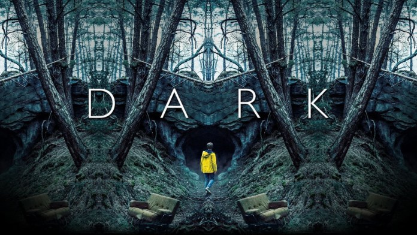

Quatro diferentes famílias - Kahnwald, Nielsen, Doppler e Tiedemann - vivem em Winden, uma pequena e aparentemente tranquila cidade alemã. A rotina dos moradores vira de cabeça para baixo quando duas crianças desaparecem misteriosamente, nas proximidades de uma antiga usina nuclear. Segredos familiares começam a emergir à medida que a polícia investiga os sumiços e logo percebe uma relação com eventos também sombrios do passado. O tempo e o espaço parecem se embaralhar cada vez mais, deflagrando uma série de tragédias que, curiosamente, se repete a cada geração.
